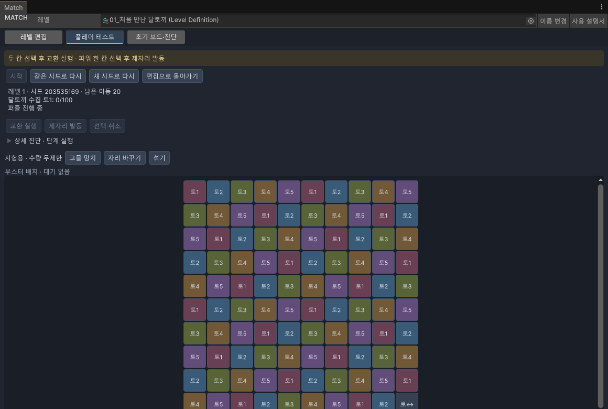
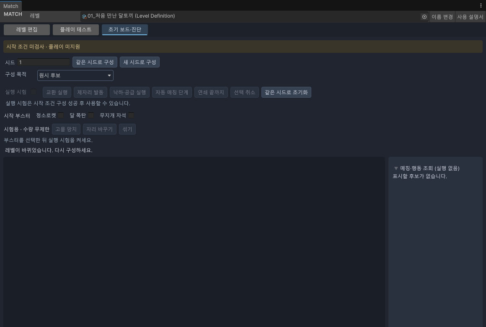
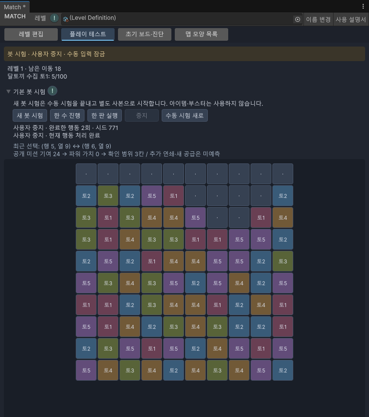
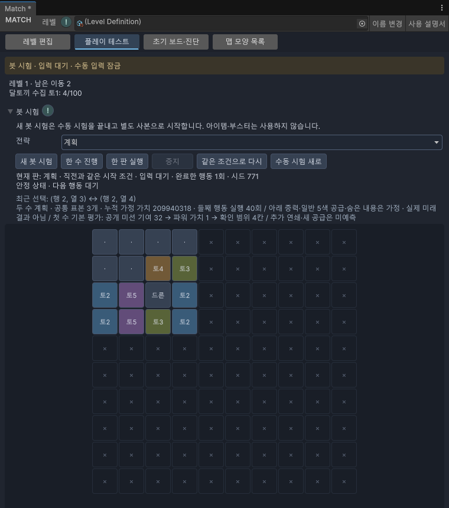
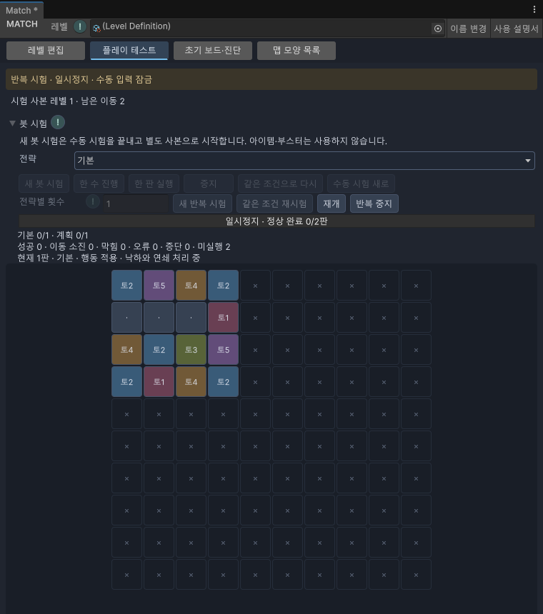

07 · 직접 확인
검사와 플레이 테스트
설정을 점검한 뒤 실제 플레이 흐름을 확인합니다.
시작 전에 미션과 이동 횟수를 정해 둡니다.
먼저 검사하기
- 레벨 편집 → 검사를 누릅니다.
- 아래 구조 검사를 펼쳐 안내를 읽습니다.
- 오류 항목을 누르면 연결된 칸이나 설정으로 이동할 수 있습니다.
- 해당 설정을 고치고 다시 검사합니다.
작업 중 저장과 완성 여부는 별개입니다. 잘못된 설정이 남은 파일도 작업 중 보관할 수 있으므로, 저장했다는 이유만으로 완료라고 생각하지 마세요.
플레이 시작하기
- 레벨 편집 상단 플레이 테스트를 누릅니다. 현재의 미저장 내용도 시험용 복사본으로 읽습니다.
- 준비되지 않았다면 검사·구성을 누릅니다.
- 필요한 시작 부스터를 고른 뒤 시작을 누릅니다.
- 바꿀 두 칸을 차례로 누르고 교환 실행을 누릅니다.
- 파워 블록 하나를 고른 뒤 제자리 발동을 누르면 그 자리에서 사용합니다.

행동 후 낙하와 연쇄 처리는 자동으로 진행됩니다. 처리 중에는 다음 행동을 할 수 없습니다. 위쪽에서 남은 이동 수와 미션 진행 상황을 확인하세요.
부스터와 아이템
| 기능 | 사용법 |
|---|---|
| 시작 부스터 | 시작 전 청소로켓·달폭탄·무지개 자석을 선택합니다. |
| 고물 망치 | 아이템을 고른 뒤 사용할 칸을 누릅니다. |
| 자리 바꾸기 | 아이템을 고른 뒤 바꿀 두 블록을 누릅니다. |
| 섞기 | 아이템을 고르고 사용 확인을 누릅니다. |
| 취소 | 고른 아이템을 해제합니다. |
이 화면의 아이템은 테스트용으로 수량 제한 없이 사용할 수 있습니다. 게임의 실제 보유량과는 다릅니다. 다른 탭으로 이동하면 아이템 선택은 해제됩니다.
다시 시작과 편집 복귀
| 버튼 | 결과 |
|---|---|
| 같은 시드로 다시 | 같은 무작위 시작값으로 다시 구성합니다. 비교할 때 유용합니다. |
| 새 시드로 다시 | 다른 무작위 시작값으로 다시 구성합니다. 다양한 결과를 봅니다. |
| 편집으로 돌아가기 | 편집 탭으로 이동합니다. 원본을 고치지 않으면 다시 돌아와 이어갈 수 있습니다. |
| 라스트팡 건너뛰기 | 성공 후 남은 파워 처리 단계에서 표시되는 건너뛰기 기능입니다. |
초기 보드·진단 탭

| 메뉴 | 뜻 |
|---|---|
| 시드 | 결과를 재현할 때 쓰는 숫자 |
| 같은 시드로 구성 / 새 시드로 구성 | 같은 조건 또는 다른 무작위 조건으로 처음 보드를 만듭니다. |
| 원시 후보 | 입력한 정의로 처음 모습을 만듭니다. 시작하기 좋은지까지 검사한 결과는 아닙니다. |
| 시작 조건 구성 | 완성된 매칭이 없고 가능한 교환이 있는 시작 보드를 찾습니다. |
| 실행 시험 | 시작 조건을 통과한 후보로 실행을 시작합니다. |
| 낙하·공급 실행 | 빈칸을 채우는 단계를 실행합니다. |
| 자동 매칭 단계 | 다음 매칭 처리 단계를 실행합니다. |
| 연쇄 끝까지 | 남은 후속 처리를 이어서 실행합니다. |
| 같은 시드로 초기화 | 현재 시험을 초기 상태로 되돌립니다. |
이 탭의 보드는 플레이 테스트 탭과 별도 시험입니다. 지금 플레이 중인 보드를 자세히 볼 때는 플레이 테스트 안의 상세 진단 · 단계 실행을 펼치세요. 펼치면 자동 처리가 멈추어 한 단계씩 확인할 수 있습니다.
봇 시험 변경 · 2026.09.28
기본 봇만 사용 → 기본·계획 전략 중 선택. 기본은 당장의 기여를 보고, 계획은 별도로 만든 가정 보드에서 다음 행동까지 살펴봅니다.
- 플레이 테스트 탭에서 봇 시험을 펼치고 전략에서 기본 또는 계획을 고릅니다. 제목 옆 !에 마우스를 올리면 설명, 누르면 이 문단이 열립니다.
- 새 봇 시험을 누릅니다. 진행 중인 수동 시험은 종료되고 현재 편집 내용의 사본을 준비합니다. 원본과 미저장 내용은 그대로입니다.
- 입력 대기가 표시되면 한 수 진행 또는 한 판 실행을 누릅니다. 한 수에는 낙하와 연쇄 처리까지 포함됩니다.
- 최근 선택에서 교환 위치와 선택 이유를 확인합니다. 점수는 행동을 고르는 기준이며 미래 결과나 난이도 등급이 아닙니다.
- 멈추려면 중지를 누릅니다. 계획 계산 중이면 계산만 취소합니다. 이미 행동이 적용되었으면 낙하·연쇄를 정리한 뒤 사용자 중지가 표시됩니다. 다시 실행하려면 한 수 또는 한 판 버튼을 누릅니다.

같은 조건으로 다시는 같은 레벨 내용과 시드로 선택한 전략을 새로 시작합니다. 기본 전략으로 시험한 뒤 전략을 계획으로 바꾸고 이 버튼을 누르면 같은 시작 조건을 비교할 수 있습니다. 진행 안내에 새 시작 조건 또는 직전과 같은 시작 조건이 표시됩니다. 전략 선택만 바꾸어도 진행 중이던 판이 바뀌지는 않습니다. 원본을 수정하거나 창이 재로드되면 이전 비교 조건은 해제됩니다.
계획의 예상 공급은 일반 5색, 알 수 없는 중력은 아래 방향, 숨겨진 내용은 가정값을 사용합니다. 실제 다음 공급이나 숨은 정답을 읽지 않습니다. 가정 처리에 실패하거나 계산 한도 안에 비교를 마치지 못하면 기본 전략으로 전환이라는 이유를 표시합니다. 예상 결과가 실제와 다르거나 기본 전략보다 나쁠 수도 있습니다.

다른 탭으로 이동하면 계산 중인 계획은 취소하며 이미 적용된 행동은 처리 후 중지합니다. 돌아와도 자동으로 다음 행동을 하지 않습니다. 수동 시험 새로는 봇 시험을 끝내고 수동 시험을 새로 준비합니다.
새 봇 시험마다 다른 시드를 사용합니다. 시드는 결과를 다시 확인하기 위한 시작값이며 봇이 읽는 정보에는 포함되지 않습니다. 봇은 숨겨진 곰팡이 속 블록이나 다음 공급 목록을 읽지 않으며 아이템·부스터도 사용하지 않습니다.
| 표시 | 뜻과 다음 작업 |
|---|---|
| 성공 | 모든 목표를 달성하고 라스트팡까지 처리했습니다. |
| 이동 수 소진 | 목표를 다 채우기 전에 이동 수를 사용했습니다. |
| 진행 불가 | 공통 게임 규칙이 더 진행할 수 없는 판으로 판단했습니다. |
| 실행 오류 | 데이터 오류나 처리 한도 등입니다. 일반 패배가 아닙니다. 성공 후 라스트팡에서 오류가 나면 성공 기록은 유지하고 라스트팡 오류를 별도로 알립니다. 표시된 이유를 확인하고 레벨 설정을 점검하세요. |
위의 한 판 봇 시험은 원본 수정·레벨 변경·창 종료·코드 재로드 후에 이전 판을 다시 사용할 수 없습니다. 새 봇 시험을 시작하세요. 반복 실행, 통계 및 현재는 반복 시험과 실행 제어를 지원합니다. 난이도 추천은 아직 제공하지 않습니다. 추가 · 예상 난이도에서 등급·판단 보류·근거를 확인할 수 있습니다.상세 통계·난이도 추천은 이후 단계입니다. 추가 · 상세 통계·사례 재생·이력 비교를 지원합니다. 난이도 추천은 후속 단계입니다.
여러 번 자동으로 시험하기
추가 · 27단계 — 직접 만든 레벨을 기본·계획 봇으로 여러 번 시험합니다. Match의 플레이 테스트 → 봇 시험에서 사용합니다.
- 전략별 횟수를 입력합니다. 기본 100이면 기본 봇 100판과 계획 봇 100판, 총 200판입니다. 1~10,000까지 입력할 수 있습니다.
- 새 반복 시험을 누릅니다. 저장하지 않은 편집 내용도 사본으로 사용하며 원본 파일은 바꾸지 않습니다. 같은 시작값마다 기본 봇, 계획 봇 순서로 실행합니다.
- 일시정지하면 진행 중인 계산과 낙하 상태를 유지합니다. 재개는 같은 위치에서 이어갑니다. 다른 탭으로 이동해도 일시정지하며 돌아온 뒤 직접 재개해야 합니다.
- 반복 중지는 현재 미완료 판을 중단합니다. 이미 끝난 판의 기록은 남습니다. 일시정지 중에도 중지할 수 있습니다.
- 같은 조건 재시험은 직전 시험의 저장된 레벨 사본과 시작값을 다시 사용합니다. 현재 레벨을 수정했다면 현재 편집 내용과 다르다는 안내가 표시됩니다. 규칙 버전이 바뀌면 예전 결과가 그대로 재현된다고 보장하지 않습니다.
진행 막대에는 정상 완료한 판 수가 표시됩니다. 아래에는 전략별 완료 수와 성공·이동 소진·막힘·오류·중단·미실행 수가 나옵니다. 미완성 비교 쌍은 같은 시작값으로 두 전략을 모두 끝내지 못했다는 뜻입니다. 오류나 중단을 일반 패배로 세지 않습니다.
시험 중 원본을 수정하거나 다른 레벨을 골라도 진행 중인 사본은 바뀌지 않습니다. 창 종료나 코드 재로드 후에는 완료 기록만 남고 진행 중인 판을 재개할 수 없습니다. 새 시험 또는 같은 조건 재시험을 사용하세요.
결과는 프로젝트의 Library/Match/AutoPlay에 보관됩니다. Library 폴더를 삭제하면 이 기록도 사라집니다. 저장 실패나 손상 기록 안내가 나오면 원인을 확인한 뒤 새 시험을 시작하세요. 장기 보관용 내보내기와 상세 통계·난이도 추천은 다음 단계 범위입니다. 추가 · 기록 내보내기·다시 열기와 상세 통계를 제공합니다. 난이도 추천은 아직 제공하지 않습니다. 추가 · 예상 난이도에서 등급·판단 보류·근거를 확인할 수 있습니다.
계획 봇은 한 수에 여러 초가 걸릴 수 있어 200판 시험은 시간이 오래 걸릴 수 있습니다. 창이 계산을 처리한 다음 일시정지·중지 요청을 받습니다.

확인 상태: 실제 Unity UI 검사 21개, 실제 코드 재로드 검사 9개 통과. 아래는 760×860 창에서 일시정지한 실제 화면입니다.
현재 확인할 수 있는 범위
수동 플레이와 초기 보드·처리 과정 확인을 지원합니다. 자동 플레이 봇, 통계, 난이도 추천 화면은 이 설명서에 없는 기능입니다. 현재는 기본·계획 봇의 한 수·한 판 시험과 같은 조건 재시험도 지원합니다. 반복 실행·통계· 반복 시험을 추가했습니다. 난이도 추천은 아직 제공하지 않습니다. 추가 · 예상 난이도에서 등급·판단 보류·근거를 확인할 수 있습니다.상세 통계· 추가 · 결과·이력에서 상세 통계와 재생을 제공합니다. 난이도 추천은 아직 제공하지 않습니다. 추가 · 예상 난이도에서 등급·판단 보류·근거를 확인할 수 있습니다.난이도 추천은 아직 제공하지 않습니다. 추가 · 예상 난이도에서 등급·판단 보류·근거를 확인할 수 있습니다. 검사 결과를 자동 난이도 평가로 받아들이지 마세요.
변경 이력
| 변경일 | 변경 항목 | 이전 → 현재 | 이유 |
|---|---|---|---|
| 2026.09.29 | 예상 난이도 확인 완료 | 추가 · 실제 800판·추천 UI·영향 회귀 완료 | 445개 검사 통과. 인간 체감·브라우저 배치는 미검증 |
| 2026.09.29 | 예상 난이도 | 추가 · 등급·판단 보류·근거 안내 연결 | 29단계 구현 반영. 대표 레벨 검증 진행 중 |
| 2026.09.29 | 결과와 이력 | 추가 · 통계·사례 재생·비교·보관 안내 연결 | 28단계 사용법 추가, 완료 감사 진행 중 |
| 2026.09.28 | 반복 시험 | 추가 · 전략별 횟수·일시정지·재개·중지·기록 보존·이전 조건 재시험 | 27단계 실제 UI 검사 반영, 전체 검증은 진행 중 |
| 2026.09.28 | 계획 전략과 비교 | 기본 전략만 → 기본·계획 선택, 같은 조건 재시험, 가정 한계와 계산 중 중지 | 26단계 실제 UI 검사·캡처 반영 |
| 2026.09.28 | 기본 봇 시험 | 추가 · 한 수/한 판 실행·안전 중지·선택 이유·별도 사본 안내 | 25단계 봇 시험 UI 반영 |
| 2026.09.28 | 모양 목록 | 추천 → 등록형 목록 안내 추가 | 사용자 등록 방식 반영 |
| 2026.09.28 | 맵 모양 추천 안내 | 추가 · 왼쪽 목차에 추천 안내 연결 | 추천과 ! 도움말 사용법 안내 |
| 2026.09.28 | 이 페이지 전체 | 추가 · 처음 작성 | 현재 Match 도구를 쉽게 설명 |
설명 편집일: 2026.09.28 · 대상: Windows / Unity 6000.3.10f1
검증 상태: 메뉴·절차 코드 대조, 실제 화면 캡처. 확인 범위 보기